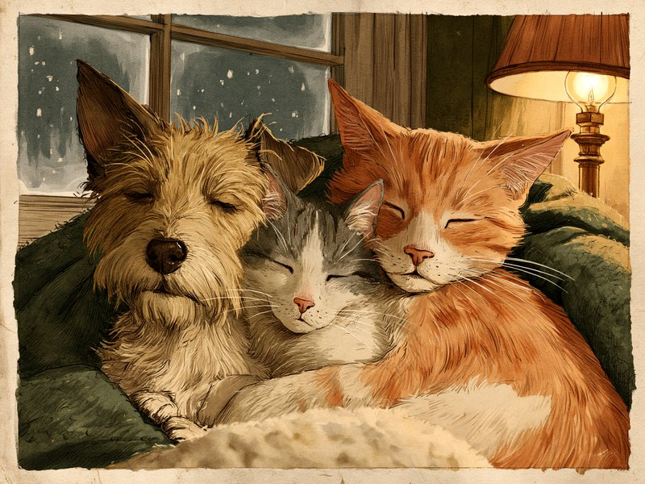

犬や猫の冬の寒さ対策は、部屋を暖めるだけでなく「どこで寝るか」「暖房器具とどう付き合うか」「冬に減りがちな水分や運動をどう補うか」まで含めて考えると、ぐっと安心できます。 Keeping dogs and cats warm in winter is about more than turning up the heat: where they sleep, how they share space with heaters, and how to make up for the water and exercise they tend to miss in the cold all matter.
室温は犬で18〜22℃前後、猫で20〜25℃前後が目安です(出典で幅があります)。寝床は床から離して窓際・壁際を避け、暖房器具は「自分で離れられる」配置にして、こたつ・ヒーター・電気カーペットは留守中に使わないようにしましょう。
※この記事は動物病院や専門メディアの公開情報をまとめたもので、獣医師による監修は受けていません。持病や個体差があるため、迷ったときはかかりつけの動物病院に相談してください。
🔍 ちょっと寄り道:動物の行動には理由があるように、人の性格にも傾向があります。気になった方は性格診断(MBTI)も覗いてみてください。
寒さに弱いのはどんな子? 震え・丸くなるがサイン
同じ犬猫でも寒さへの強さには差があり、子犬・子猫、高齢の子、痩せ気味の子、持病のある子、そして被毛の薄いタイプは特に冷えやすいと考えられています。子犬・子猫は体温調節の機能がまだ未熟で、高齢になると筋肉量の減少によって体温を保つ力が下がるためです。心臓病や腎臓病、内分泌疾患などの持病がある子や、手術後・通院中の子も、寒さに配慮したい対象に挙げられています。
犬では、トイ・プードルやマルチーズのようなシングルコートの犬種はアンダーコートがなく、寒さに弱い傾向があるとされています。また小型犬は地面との距離が近いぶん熱が逃げやすく、体脂肪の少ない犬も冷えやすいと説明されています。猫では、高齢猫や子猫、痩せている猫、短毛・無毛種に加え、甲状腺機能低下症や心臓病などの持病がある猫が寒さに弱いタイプとされています。
寒がっているサインは、犬猫ともに「小さく丸くなる」「小刻みに震える」が代表的です。犬なら布団にもぐる、散歩に行きたがらないといった様子、猫なら活動量が減る、耳や肉球が冷たい、毛を逆立てる、さらに飲水量やトイレ回数の減少も寒さのサインとして挙げられています。ただし猫は、震えて体温を作るより暖かい場所へ移動して調節する傾向が強いとされるため(猫の冬のコタツ愛トリビア参照)、震えだけでなく、活動量の減少や丸まったまま動かない様子にも目を向けてください。日常の中でこうした変化に気づけるかどうかが、冬のケアの出発点になります。
- 共通:小さく丸くなる、小刻みに震える
- 犬:布団にもぐる、散歩に行きたがらない
- 猫:活動量が減る、耳や肉球が冷たい、毛を逆立てる、飲水量・トイレ回数が減る
出典: アニコム損保「犬は寒さに強い? 寒がっているサインと冬の対策」 anicom-sompo.co.jp / どうぶつ病院京都 四条堀川「猫の冬の寒さ対策|室温や注意点を獣医師が解説」 animal-shijo.com / ガレン動物病院「犬猫の温度管理について」 galenanimalhospital.com / みかん動物病院「冬の散歩と寒さ対策」 animal-hospital.co.jp / アニコム損保「猫は寒がり? 冬の寒さ対策と飲水の工夫」 anicom-sompo.co.jp
室温は「犬18〜22℃・猫20〜25℃前後」が目安、個体差で調整する
冬の室温は、犬で18〜22℃前後、猫で20〜25℃前後を目安に、その子の様子を見ながら調整するのが現実的な考え方です。ただし数値は出典によって幅があり、犬では「18〜22℃」「20〜22℃」、犬猫まとめて「20〜25℃前後」とする病院もあり、猫では「20〜25℃」「20℃前後を基準に様子を見る」など、動物病院や監修元ごとに少しずつ異なります。ひとつの数字を唯一の正解と考えるより、この幅の中でわが家の子に合う温度を探す、と捉えるとよさそうです。
幅の中でどこに寄せるかは、その子のタイプで決まります。犬では小型犬・短毛種は20〜24℃、大型犬や寒冷地原産の犬種は約18℃と、タイプ別に目安を分けている動物病院もあります。また、室温が10〜15℃程度まで下がると犬は寒さを感じるとされています。子犬・子猫、高齢の子、持病のある子は少し暖かめが目安で、高齢猫や病気の猫では22〜25℃を勧める病院もあります。
なお、猫の冬のコタツ愛トリビアでは、猫が体温調節に負担なく過ごせる温度域を30〜38℃としています。これは動物の体温調節の考え方にもとづく数字で、動物病院が勧める部屋全体の室温の目安とは基準が異なる話です。両者を混同せず、猫が寒がるようなら暖かい場所を自分で選べるようにしておく、と考えるとよいでしょう。
見落としがちなのが湿度です。こちらも「30〜50%」「40〜60%」「50〜60%」と出典で幅がありますが、暖房で空気が乾燥しやすい点は共通して指摘されています。加湿器を使う、濡れタオルを干すといった方法で、乾きすぎを防ぐ工夫が勧められています。加湿器を選ぶときの注意点は冬の寒さ対策グッズの選び方にまとめています。
出典: どうぶつ病院京都 四条堀川「猫の冬の寒さ対策|室温や注意点を獣医師が解説」 animal-shijo.com / ガレン動物病院「犬猫の温度管理について」 galenanimalhospital.com / アニコム損保「猫は寒がり? 冬の寒さ対策と飲水の工夫」 anicom-sompo.co.jp / つだ動物病院「犬が快適に過ごせる室内環境」 tsuda-vet.com / アイ動物クリニック「犬の冬の室温と寒さ対策」 i-animalclinic.org / ペトコト「猫の冬の室温と寒さ対策(獣医師監修)」 petokoto.com / 旭化成ホームズ「ペットと暮らす家の冬の温度管理(獣医師監修)」 asahi-kasei.co.jp
寝床は「床から離す・窓際や壁際を避ける」
寝床の置き方で押さえたいのは、床から少し高い位置に置くこと、そして窓際・壁際を避けることの2点です。床は冷気が溜まりやすい場所で、猫の寝床は床から5〜15cmほど高い位置が目安とされています。窓際や壁際は外気の影響で冷えやすいため、部屋の中でも少し内側に寄せるだけで、寝床の体感はかなり変わると考えられます。なお、日当たりのよい窓辺で太陽光を浴びて暖まる方法を紹介している動物病院もあり、日向ぼっこの場所として窓辺を使うことと、寝床を窓際に置いて冷気にさらされることは別の話と考えられます。
ケージやクレートを使っている犬の場合は、ケージの下や壁との間に毛布を挟む方法が勧められています。冬は壁や床そのものが非常に冷たくなるため、寝床と冷たい面のあいだに一枚かませるだけで、じんわり奪われていく体温を減らせるという考え方です。
もうひとつ大事なのが、暖房の温風の出口を避けること、そして「自分で移動できる」環境にしておくことです。暖かい場所と少し涼しい場所の両方があり、犬猫が自分の感覚で居場所を選べるようにしておけば、暖めすぎも冷えすぎも防ぎやすくなります。
出典: どうぶつ病院京都 四条堀川「猫の冬の寒さ対策|室温や注意点を獣医師が解説」 animal-shijo.com / アニコム損保「猫は寒がり? 冬の寒さ対策と飲水の工夫」 anicom-sompo.co.jp / アイ動物クリニック「犬の冬の室温と寒さ対策」 i-animalclinic.org / 旭化成ホームズ「ペットと暮らす家の冬の温度管理(獣医師監修)」 asahi-kasei.co.jp
暖房器具の落とし穴:低温やけど・こたつ・コード
暖房器具で気をつけたいのは、低温やけど、こたつの中の環境、そして電気コードの3つです。低温やけどは、44〜50℃程度の熱源に長時間触れ続けることで起きるとされています。ホットカーペットやストーブ、ガスファンヒーターの温風が当たり続ける状況も、犬猫が自分から離れないでいると同じリスクにつながると指摘されています。
対策の基本は「熱源との距離をつくる」ことです。ホットカーペットは38℃以下を目安にしてタオルなどを敷く、湯たんぽは厚手のカバーで包んで時々触って温度を確かめる、ストーブにはガードを付ける、ペットヒーターには別の居場所も用意して長時間の連続使用を避ける、といった工夫が動物病院から勧められています。長く同じ場所にいるようなら、抱っこして移動させるのもひとつの方法です。
こたつは、猫が長くいると酸欠・低温やけど・脱水につながりやすいとされる場所です(出典は猫についての解説です)。定期的に布団を上げて中の温度を下げる、布団を少し開けて空気の通り道をつくるといった配慮が勧められています。脱水のサインとしては排尿回数・量の減少、毛並みの悪化、口の中の乾きが挙げられています。猫がこたつを好む理由は猫の冬のコタツ愛トリビアで紹介しています。
また、猫の室内での感電で最も多いのはコードを噛みちぎることとされ、コードを隠す・カバーを使う・未使用時は抜くのが基本です。留守中は、こたつ・ヒーター・電気カーペットなどを使わない(電源を切る)よう勧められています。ここで挙げたのは熱源に触れられる暖房器具の話で、エアコンによる室温の維持とは別に考えてください。
- ホットカーペット:38℃以下が目安、タオルなどを敷く
- 湯たんぽ:厚手カバーで包み、時々触って温度を確認
- ストーブ・ファンヒーター:ガードを付け、温風が当たり続けない配置に
- こたつ:定期的に布団を上げる、空気の通り道をつくる
- コード:隠す・カバーを使う・未使用時は抜く
- 留守中にこたつ・ヒーター・電気カーペットをつけっぱなしにする
- 犬猫が自分で離れられない場所に熱源を置く
- コードを噛んだあと、元気そうだからと様子見にする(数時間〜数日後に症状が出ることがあるため受診を)
低温やけどは、軽症に見えても後から悪化することがあるとされています。皮膚の異変に気づいたら、早めに動物病院へ相談するのが安心です。ヒーターやガード、コードカバーなど道具の選び方は、冬の寒さ対策グッズの選び方で紹介しています。
出典: 東福岡たぬま動物病院「犬猫の低温やけどに注意」 tanuma-vet.com / つだ動物病院「気をつけたい愛犬・愛猫の低温やけど」 tsuda-vet.com / ペコ「猫とこたつの注意点(獣医師監修)」 peco-japan.com / アニコム損保「猫の感電に注意」 anicom-sompo.co.jp / アニコム損保「猫は寒がり? 冬の寒さ対策と飲水の工夫」 anicom-sompo.co.jp / ペトコト「猫の冬の室温と寒さ対策(獣医師監修)」 petokoto.com / 旭化成ホームズ「ペットと暮らす家の冬の温度管理(獣医師監修)」 asahi-kasei.co.jp / サーカス動物病院「低温やけどは早めの来院を」 circus-ah.com
冬の散歩は「暖かい時間帯・短め・帰宅後に拭く」
冬の散歩は、日中の暖かい時間帯を選び、寒がる子は短めに切り上げ、帰宅後に濡れた足やお腹をしっかり拭く——この3つが基本の考え方です。朝は冷え込みに加えて路面凍結の心配があり、夕方以降は視界が悪くなるため反射材を身につけるよう勧められています。
出かける前には、室内で軽く体を動かして体を温めておく、暖房を弱めて外との寒暖差を減らす、といった準備が役立つとされています。気温が10℃を下回ると寒さを強く感じやすいとして、散歩時間を15〜20分程度に短縮し、温かい服を着せるよう勧める動物病院もあります。寒さに弱い犬種には防寒着を用意し、震えや調子の悪そうな様子があれば早めに切り上げるのが安心です。散歩中のサインとしては、震える、丸まる、外に出たがらない、途中で座り込むといった行動が挙げられています。
靴については、雪の日など特別な場合のみとし、普段から履かせると肉球が弱くなる可能性があると説明されています。乾燥でひび割れが気になる場合は、保湿クリームでケアする方法も紹介されています。防寒着などの選び方は冬の寒さ対策グッズの選び方で紹介しています。
出典: みかん動物病院「冬の散歩と寒さ対策」 animal-hospital.co.jp / 姉ヶ崎どうぶつ病院「冬の散歩で気をつけたいこと」 anegasaki-ah.jp / つだ動物病院「冬のお散歩で注意していただきたいこと」 tsuda-vet.com
冬は水分と体重にも目を配る、受診の目安も知っておく
冬は犬猫ともに飲水量と運動量が減りやすく、それが泌尿器のトラブルや冬太りにつながると考えられています。犬は冬に飲水量が下がり、寒さから運動をしたがらなくなって肥満になりやすいとされ、冬に注意すべき病気として泌尿器系疾患(膀胱炎)、肥満、低温やけどが挙げられています。冬太りの背景には、運動時間の減少に加えて、在宅時間が増えることでおやつが増えやすいという事情もあるようです。
猫も冬は飲水量・運動量が減り、尿が濃くなってミネラルが沈殿しやすくなるとされています。特にオス猫は尿道が細長く閉塞のリスクが高く、放置すると重篤になりうると説明されています。トイレに何度も行くのに尿が出ていない様子や、ぐったりしている様子があれば、様子を見ずにすぐ動物病院に相談してください。
暖房による乾燥や活動量の低下で水を飲む機会そのものが減るため、水皿を複数箇所に置く、ぬるめのお湯を試す、フードをぬるま湯でふやかす、ウェットフードを活用するといった工夫が勧められています。トイレの回数や尿量の変化、尿が濃い・赤い、トイレで鳴くといった様子は膀胱炎のサインとされているので、冬は普段よりトイレの様子を気にかけてみてください。
震えについては、寒さ由来のものなら温めて収まり、元気と食欲が保たれていれば様子を見てよいとされています。一方で、暖かい環境でも震えが続く場合や、長時間続く・繰り返す、硬直やけいれん、呼びかけへの反応低下、痛がる鳴き方、元気・食欲の低下や嘔吐・ふらつきを伴う場合は、早めの受診が勧められています。
- 水分:水皿を複数箇所に(猫はぬるめのお湯やウェットフードも活用)
- 体重:運動時間の減少とおやつの増加に注意
- トイレ:回数・尿量・色の変化、トイレで鳴く様子に注意
- 受診:温めても震えが続く、元気・食欲低下や嘔吐・ふらつきを伴う
出典: ワンクォール「犬の冬に気をつけたい病気(獣医師監修)」 magazine.cainz.com / いぬのきもち「犬の冬太りの理由(獣医師監修)」 dog.benesse.ne.jp / 北光犬猫病院「冬に増える猫の泌尿器トラブル」 hokkou-ac.jp / 国分寺ハートアニマルクリニック「冬の水分不足に注意!|猫の膀胱炎予防のポイント」 kokubunjiheartanimal.com / アニコム損保「猫は寒がり? 冬の寒さ対策と飲水の工夫」 anicom-sompo.co.jp / 千里桃山台動物病院「犬猫の震えの原因と受診の目安」 hs-gac.jp
猫の平熱はおよそ38℃前後と、人間より高めだとされています。猫が冬にこたつや日だまりへ向かうのは、この体温を保つためだと考えられています。詳しい理由は猫の冬のコタツ愛トリビアで紹介しています。
ミニクイズ:猫の寝床は、床に直接置くのがいちばん暖かい?(タップして答えを見る)
こたえ×。床は冷気が溜まりやすい場所とされ、猫の寝床は床から5〜15cmほど高い位置に置くのが目安とされています。あわせて、外気で冷えやすい窓際・壁際を避けることも勧められています。